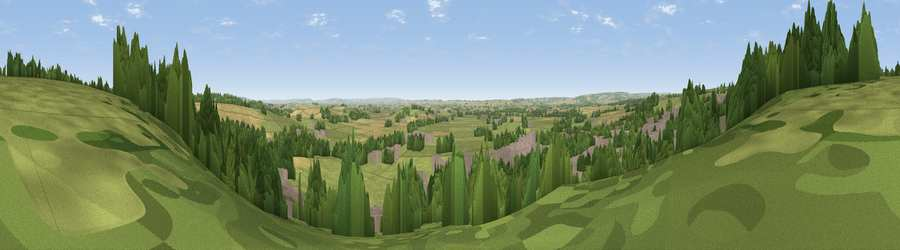

Viewpoint near Kirkbymoorside
#17793 in England · top 40% of its area beats it · near Kirkbymoorside · footpathWhere it is
The exact computed spot (SE 70075 86675). Click the marker for map links.
Public access: a public right of way passes within 11 m of this spot. Computed from Natural England's CRoW access layer and OpenStreetMap rights of way — not the legal definitive map. Always verify locally.
The view, rendered

A 360° render of this exact spot computed from the terrain model, tree cover and land cover — summer colours, afternoon light, calibrated against photographs of famous viewpoints. Real trees, hedges and buildings will differ in detail.
The panorama
Grey silhouette: terrain skyline in each direction (720 bearings, Earth curvature and refraction included). Dashed green: skyline with trees (+15 m) and buildings (+8 m) as obstacles. Blue strip: how far the ground is visible on each bearing.
Where the view opens
Wedge length = distance to the farthest visible ground on that bearing (vegetation-aware). Rings at 10, 25 and 50 km.
What fills the view
42% grassland · 24% woodland · 18% built-up · 17% cropland
Angular shares of the visible panorama (visual magnitude), not map area. Landscape diversity 0.57 (0–1 Shannon).
Key numbers
More beautiful places nearby
The staircase of upgrades: each row has a higher view potential than everything closer. Driving times are estimates from straight-line distance, calibrated against real road routing — check an actual route before setting out.
| Place | Direction | Drive | Score |
|---|---|---|---|
| Viewpoint near Gillamoor | WNW · 4 km | ~9 min | 56.4 |
| Riccal Heads | NNE · 4 km | ~9 min | 60.8 |
| Viewpoint near Gillamoor | NW · 5 km | ~12 min | 67.2 |
| Viewpoint near Gillamoor | NW · 6 km | ~12 min | 72.8 |
| Viewpoint near Ampleforth | SW · 13 km | ~23 min | 76.6 |
| Viewpoint near Boltby | W · 19 km | ~33 min | 79.6 |
| Viewpoint near Thirlby | W · 19 km | ~33 min | 81.5 |
| White Hill | NW · 22 km | ~36 min | 84.2 |
54.27094, -0.92548 · source: screening · position refined by local search. Computed location — check access rights before visiting.